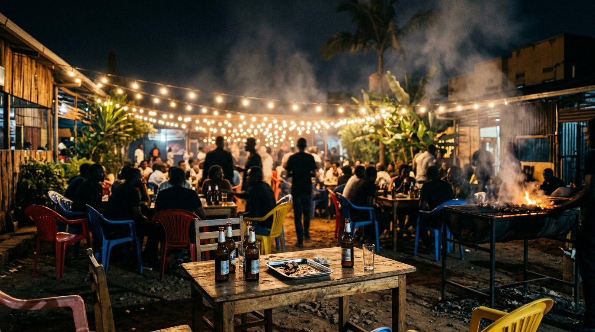
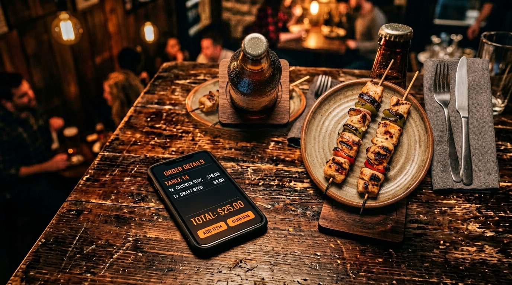
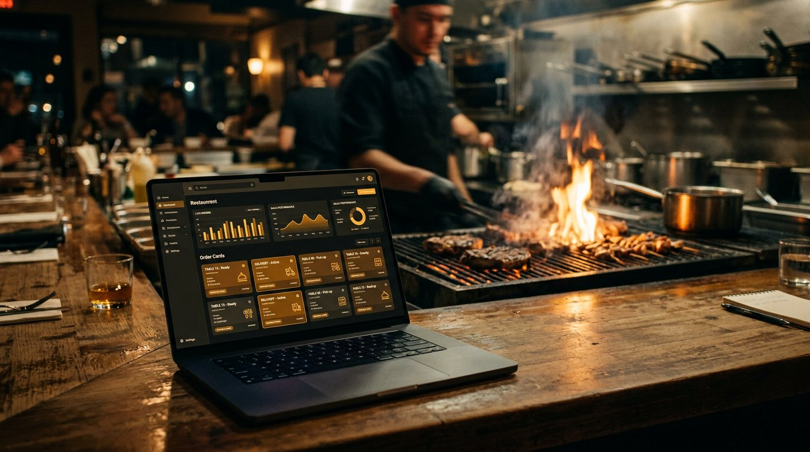

Sale deck · August 2026
The Green
Corner
A complete digital platform for a Nyamirambo grill pub. Website, admin, orders, and phone alerts — already built, already live, ready to hand over.
How this meeting runs
Twenty minutes.
Five parts.
- The venue this was built for
- The problem a grill pub actually has
- The product, page by page
- How the owner runs it every day
- What transfers, what stays empty, next step
A rule for this deck
Nothing here is invented. Menu names and prices are owner-confirmed. Phone, hours, reviews, and photos stay empty until the owner publishes them. Empty is better than fake.
What is for sale
A production website and operations desk for The Green Corner — not a theme, not a landing page, a system the owner can run.

The venue
A grill pub
in Nyamirambo.
The Green Corner is a lively, no-frills spot in Kigali known for fire-grilled fish, goat and beef brochettes, and an ice-cold selection of local beers.
The problem
The grill is on.
The internet is quiet.
No living menu
A printed board, a stale Facebook photo, or nothing. Prices change. Fish runs out. The public never sees it.
Orders die in chat
WhatsApp is the real till in Kigali. Without a structured flow, the owner gets “hi”, then silence, then a no-show.
No desk for the owner
There is no single place to post hours, tonight’s special, a photo, or to see who just ordered for pickup.

The solution
One system.
Two sides.
Guests browse the menu, build an order, and send it for pickup. The owner updates the site, sees new orders, and can get a push on the phone after the tab is closed.
Customer website
Built to look like
the grill, not a café.
- Home — cinematic hero, featured plates, map
- Menu — categories, prices, add-to-order
- About — neighborhood grill-pub story
- Gallery, Specials, Reviews — only when real
- Location — official Green Corner map pin
- Contact — order-ahead + message the house
Live now
nconer.netlify.app
Dark charcoal by default. Light theme on request. Sticky mobile actions. Open / Closed badge the moment hours are posted. SEO titles, Open Graph, and LocalBusiness structured data — only confirmed fields.
Confirmed menu
What people
come for.
| From the grill | Category | RWF |
|---|---|---|
| Legendary Big Grilled Fish (Amafi Manini) | Signature Fish | 18,500 |
| Classic Goat Brochette (Zingalo) | Grilled Meats | 1,500 |
| Beef Brochette | Grilled Meats | 1,200 |
| Whole Roasted Potatoes (Ibirayi) | Sides | 2,000 |
| Fried Plantains (Mizuzu) | Sides | 2,500 |
| Ice Cold Local Beers — Skol, Mutzig, Primus | Drinks | 1,500 |
Names, prices and descriptions provided by the owner. Menu photos are stand-ins until real plates are uploaded in Admin.
How money starts
Build an order.
Pick it up ready.
01 · Cart
Guests add fish, brochettes, sides and drinks. Quantities, estimated total in RWF, drawer on every page.
02 · Order ahead
Name, phone, pickup date and time, notes. Saved to the owner inbox with line items when the cart was used.
03 · Confirm
The house confirms by phone or WhatsApp before pickup. No fake “payment complete” theatre.
Online payment is not part of this build. The product takes the order. The grill takes the cash or MoMo the way the house already does.
Kigali-native
English. Kinyarwanda.
WhatsApp first.
Four ready messages
Quick order · Group / tonight · Catering · A question. The guest picks a language, then a reason. The owner gets a message they can answer, not “hello”.
A bilingual house
Navigation, buttons, empty states, cart and forms switch between English and Kinyarwanda. Menu names stay as the owner typed them — Amafi Manini, Zingalo, Ibirayi, Mizuzu.
Find us
Pinned on the
real map.
Homepage and Location use the official Google Maps embed for Green Corner. Directions open the live pin. Hours and a live Open / Closed badge appear the day the owner posts them.

Owner desk
Change tonight
without a developer.
- Overview
- Orders
- Inquiries
- Menu
- Gallery
- Specials
- Reviews
- Hours
- Business info
- Logo & hero media
- Notifications
- Protected login
Operations
The inbox the
counter never had.
New order cards
Name, phone, pickup window, item count, notes. Status moves from new to handled. Badges on the sidebar.
Messages
Catering, questions, groups. Same desk. Nothing buried in a personal WhatsApp until the owner chooses to take it there.
Live while open
Supabase Realtime updates the dashboard. Optional chime in the tab so a new order is hard to miss during service.
After the tab closes
A new order can
reach the phone.
Real Web Push — service worker plus VAPID — not a browser popup that dies when the laptop lid shuts. Enable once in Admin → Notifications. Test it, then close the tab.
Trust
Empty is better
than fake.
The public site never shows PLACEHOLDER, a dummy WhatsApp, or a review nobody wrote. If the owner has not published it, the block stays hidden.
- Phone and WhatsApp — hidden until saved
- Hours — empty state, not invented times
- Reviews and specials — only real ones
- Gallery — waits for venue photos
- Social links — only if the column and URL exist
Under the hood
Modern, boring,
transferable.
Frontend
React 18, Vite, React Router, Tailwind. Oswald + Source Sans. Light / dark theme.
Backend
Supabase — Postgres, Auth, Storage, Row Level Security, Realtime.
Hosting
Netlify. Environment keys at build time. Server-only secrets stay on the function.
Safety
Anon key in the browser. Service-role and VAPID private key never ship to the client.
The handover
What the buyer gets.
INCLUDED
- Full source code on GitHub
- Production site on Netlify
- Admin dashboard and auth
- Database schema and storage path
- Order + inquiry inbox
- Web Push architecture
- Official Maps embed
- This deck and the README
OWNER STILL SETS
- Confirmed phone and WhatsApp
- Opening hours
- Real plate and interior photos
- A current logo if the smoothie lockup is retired
- Promotions and guest quotes they may publish
- Custom domain, if they want one
- VAPID keys to turn background push on
Why not start over
Rebuild vs. take the keys.
| Start from scratch | This platform | |
|---|---|---|
| Time to a live grill site | Weeks to months | Already live |
| Daily menu and hours | Call a developer | Owner admin |
| WhatsApp + Kinyarwanda | Usually an extra | Built in |
| Orders and phone push | Usually an extra | Built in |
| Fake reviews and dummy numbers | Common on rushed sites | Never shown |
| Fit to this venue | Generic restaurant theme | Green Corner, Nyamirambo |
Proof
See it. Then take it.
Public site
nconer.netlify.app
Menu, cart, map, bilingual chrome, light and dark. What guests will use tonight.
Owner desk
nconer.netlify.app/admin
Login is a user created in Supabase Authentication — not the Supabase dashboard password. One account is enough to run the house.
The ask
Who holds
the keys?
The product is built. The grill already has a digital house. Investment, access, and the handover date are the only things left to agree.
The Green Corner · Nyamirambo, Kigali · Sale presentation, August 2026